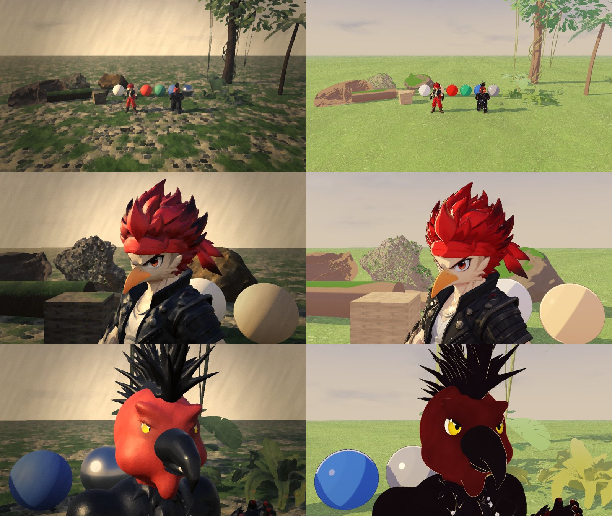
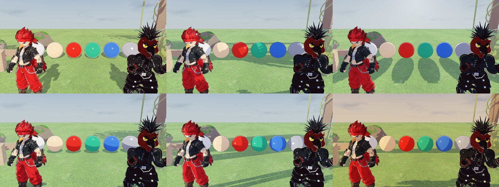
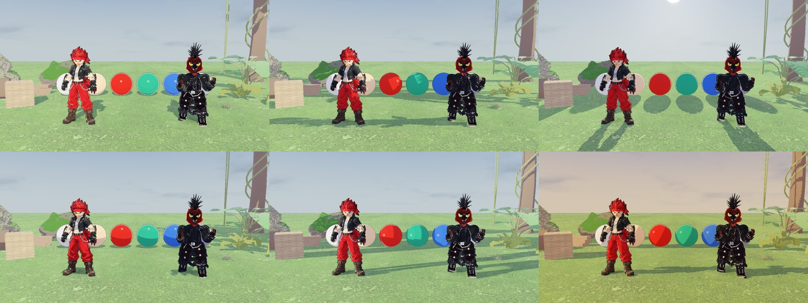
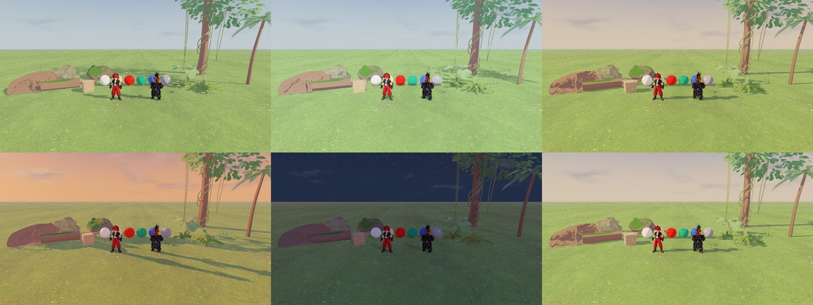
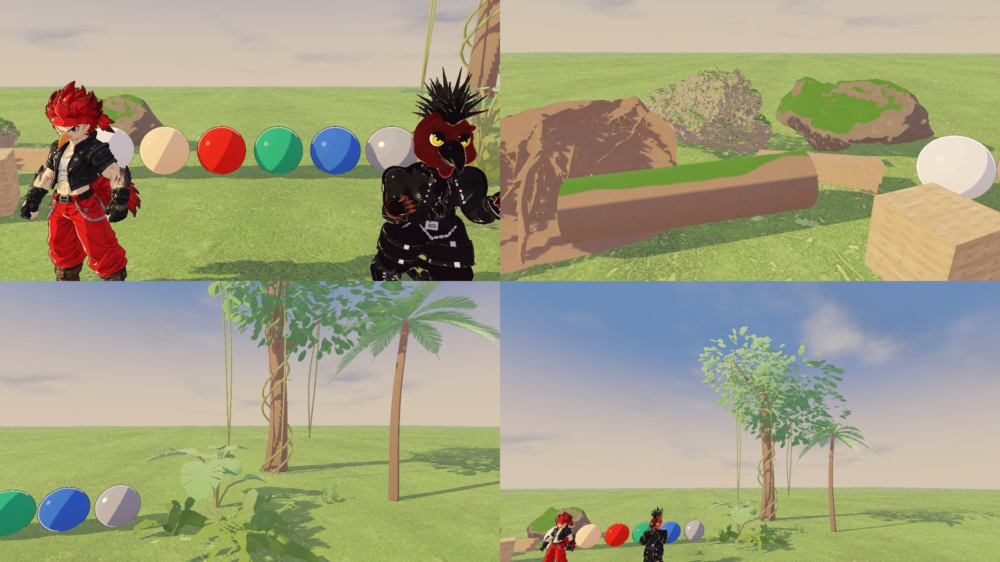
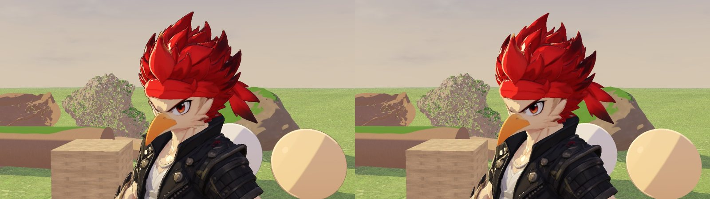

<title>Pluma Ígnea · Laboratorio cel shading</title>
<meta name="claude:viewport-fit-sides" content="cover">
<link rel="preconnect" href="https://fonts.googleapis.com">
<link rel="stylesheet" href="https://fonts.googleapis.com/css2?family=M+PLUS+1:wght@500;800&family=Source+Sans+3:ital,wght@0,400;0,600;1,400&family=JetBrains+Mono:wght@400;600&display=swap">
<style>
/* Layout: informe de etapa en una columna; galerías de capturas reales que ocupan el ancho */
:root{
  --bg:#f2f5f3; --surface:#ffffff; --fg:#13242b; --muted:#566a70; --line:#d5dfdc;
  --accent:#d9561a; --jade:#167a63; --warn:#b8860b; --bad:#b3372a;
  --chip-ok:#e1f2ec; --chip-mid:#fbf0d9; --chip-bad:#f8e2de;
  --display:"M PLUS 1","Hiragino Sans","Segoe UI",system-ui,sans-serif;
  --body:"Source Sans 3","Segoe UI",system-ui,sans-serif;
  --mono:"JetBrains Mono",ui-monospace,Menlo,Consolas,monospace;
  color-scheme:light;
}
@media (prefers-color-scheme:dark){:root:not([data-theme="light"]){
  --bg:#0f1a1e; --surface:#16252b; --fg:#e4eeec; --muted:#9db1b3; --line:#2a3d43;
  --accent:#ff8a4c; --jade:#4fc9a6; --warn:#e3b54a; --bad:#ff8b7c;
  --chip-ok:#173a31; --chip-mid:#3a3218; --chip-bad:#42221e; color-scheme:dark}}
:root[data-theme="dark"]{
  --bg:#0f1a1e; --surface:#16252b; --fg:#e4eeec; --muted:#9db1b3; --line:#2a3d43;
  --accent:#ff8a4c; --jade:#4fc9a6; --warn:#e3b54a; --bad:#ff8b7c;
  --chip-ok:#173a31; --chip-mid:#3a3218; --chip-bad:#42221e; color-scheme:dark}
body{background:var(--bg);color:var(--fg);font:17px/1.6 var(--body);
  padding-left:max(16px,env(safe-area-inset-left,0px));padding-right:max(16px,env(safe-area-inset-right,0px));padding-block:32px 64px}
main{max-width:1040px;margin:0 auto;display:flex;flex-direction:column;gap:48px}
h1,h2,h3{font-family:var(--display);text-wrap:balance;line-height:1.2;margin:0}
h1{font-size:clamp(30px,5vw,46px);font-weight:800}
h2{font-size:26px;font-weight:800;display:flex;gap:12px;align-items:baseline}
h2 .n{font-family:var(--mono);font-size:15px;color:var(--accent);font-weight:600}
h3{font-size:18px;font-weight:500}
p,li{max-width:70ch}
p{margin:0}
section{display:flex;flex-direction:column;gap:16px}
.eyebrow{font-family:var(--mono);font-size:13px;letter-spacing:.08em;text-transform:uppercase;color:var(--muted)}
.lead{font-size:19px}
code{font-family:var(--mono);font-size:.84em;background:var(--surface);border:1px solid var(--line);border-radius:4px;padding:0 4px;overflow-wrap:anywhere}
.facts{display:grid;grid-template-columns:repeat(auto-fit,minmax(200px,1fr));gap:12px}
.fact{background:var(--surface);border:1px solid var(--line);border-radius:8px;padding:14px 16px;display:flex;flex-direction:column;gap:2px}
.fact b{font-family:var(--display);font-size:24px;font-variant-numeric:tabular-nums}
.fact span{color:var(--muted);font-size:14px;line-height:1.4}
.wait{border:2px solid var(--accent);border-radius:10px;padding:16px 18px;background:var(--surface)}
.tbl{overflow-x:auto;border:1px solid var(--line);border-radius:8px;background:var(--surface)}
table{border-collapse:collapse;width:100%;font-size:15px;min-width:640px}
th,td{text-align:left;vertical-align:top;padding:9px 12px;border-bottom:1px solid var(--line)}
th{font-family:var(--mono);font-size:12px;letter-spacing:.06em;text-transform:uppercase;color:var(--muted);font-weight:600}
tr:last-child td{border-bottom:0}
.chip{display:inline-block;font-family:var(--mono);font-size:12px;font-weight:600;padding:1px 8px;border-radius:99px;white-space:nowrap}
.ok{background:var(--chip-ok);color:var(--jade)} .mid{background:var(--chip-mid);color:var(--warn)} .bad{background:var(--chip-bad);color:var(--bad)}
figure{margin:0;display:flex;flex-direction:column;gap:6px;min-width:0}
figure img{width:100%;border-radius:6px;border:1px solid var(--line);display:block}
figcaption{font-size:14px;color:var(--muted);line-height:1.45}
ul{margin:0;padding-left:22px;display:flex;flex-direction:column;gap:6px}
.risk{display:grid;grid-template-columns:auto 1fr;gap:8px 12px;align-items:baseline}
footer{color:var(--muted);font-size:14px;border-top:1px solid var(--line);padding-top:16px}
:focus-visible{outline:2px solid var(--accent);outline-offset:2px}
</style>

<main>
<header style="display:flex;flex-direction:column;gap:12px">
  <div class="eyebrow">Etapa B · Sistema de materiales y cel shading · 30 oct 2026</div>
  <h1>Laboratorio cel shading de Pluma Ígnea</h1>
  <p class="lead">Prueba controlada del sistema de materiales anime en una escena aparte, con esferas, madera, roca, follaje y los dos pollos actuales. El juego no cambia por defecto y el mundo conserva sus materiales v13 hasta la Etapa C.</p>
  <div class="wait"><b>Siguiente paso:</b> espero tu revisión de la escena de prueba y tu aprobación antes de empezar la Etapa C (iluminación y entorno).</div>
  <div class="facts">
    <div class="fact"><b>266 / 266</b><span>pruebas: las 237 originales y 29 nuevas del estilo anime (headless, Godot 4.7)</span></div>
    <div class="fact"><b>5 shaders</b><span>y una iluminación común, todos en <code>assets/materials/anime/</code></span></div>
    <div class="fact"><b>27 capturas</b><span>reales en Forward+ (render por CPU): 5 ángulos de sol, 5 horas, primeros planos</span></div>
    <div class="fact"><b>0</b><span>recursos originales modificados (lo comprueba una prueba con MD5)</span></div>
  </div>
</header>

<section>
  <h2><span class="n">1</span>Antes y después</h2>
  <figure><figcaption>Izquierda, estilo pictórico v13; derecha, estilo anime. Mismos modelos, misma luz (16:30 h del ciclo), mismo encuadre. Plano general, Pollo Amarillo y Pollo Negro.</figcaption></figure>
  <figure><figcaption>Primeros planos de los dos pollos con el material anime: sombra teñida de violeta frío, brillo en mancha en el pelo y los ojos, luz de borde y contorno fino que toma el color de la textura.</figcaption></figure>
</section>

<section>
  <h2><span class="n">2</span>Qué hace el sistema</h2>
  <ul>
    <li><b>Bandas de luz</b>: 2 o 3 niveles (sombra, tono medio, luz plena) con umbral y suavizado de borde configurables por material.</li>
    <li><b>Colores de sombra</b>: el lado oscuro recibe la luz del sol teñida (<code>sombra_color</code>, <code>sombra_fuerza</code>), nunca negro. Las sombras proyectadas del sol se endurecen para encajar con las bandas.</li>
    <li><b>Control de intensidad</b> por material (<code>intensidad_luz</code>) y color base personalizable (textura × color × tinte, que es lo que usarán los aldeanos).</li>
    <li><b>Especular estilizado</b>: brillo en forma de mancha con tamaño y fuerza; el metal recibe uno grande y nítido.</li>
    <li><b>Luz de borde</b> a contraluz, para separar la silueta del fondo.</li>
    <li><b>Contornos opcionales</b> con dos técnicas:
      <ul>
        <li>Personajes: casco invertido de grosor fijo en píxeles, que se adelgaza con la distancia y desaparece a 16 m. Usa el color de la textura oscurecido, no negro puro.</li>
        <li>Escenario: líneas de pantalla por profundidad y normales (solo Forward+). El follaje solo marca la silueta de la masa, sin una línea por hoja, y los personajes no reciben línea doble.</li>
      </ul></li>
    <li><b>Familias separadas</b>: personaje, entorno sólido (madera, piedra, mimbre, con color plano y detalle pintado) y follaje (normales esféricas para iluminar la copa como una masa; conserva el viento y el doblado al paso del jugador).</li>
  </ul>
</section>

<section>
  <h2><span class="n">3</span>Pruebas de luz: ángulos y horas</h2>
  <figure><figcaption>Esferas de referencia (blanco, piel, rojo, jade, azul y metal). Arriba: sol frontal, lateral y contraluz. Abajo: cenital, rasante y el atardecer del ciclo.</figcaption></figure>
  <figure><figcaption>Los dos pollos con los mismos ángulos de sol y el mismo orden.</figcaption></figure>
  <figure><figcaption>Ciclo día-noche: 9:00, 13:00, 16:30 / 18:12, 21:00 y, al final, el mismo plano sin contornos.</figcaption></figure>
  <p>Lo que comprobé en las capturas:</p>
  <ul>
    <li>Las bandas son limpias en las esferas desde los cinco ángulos. No hay acné de sombra ni dientes de sierra en la línea de luz y sombra.</li>
    <li>A contraluz y con sol rasante los personajes no se vuelven negros: la sombra teñida y la luz de borde mantienen el volumen legible.</li>
    <li>Con sol cenital (13:00) la imagen queda lavada: hay demasiado ambiente y niebla clara para esa hora. Se corrige en la Etapa C al rehacer las paletas del ciclo día-noche.</li>
  </ul>
</section>

<section>
  <h2><span class="n">4</span>Materiales de madera, roca y follaje</h2>
  <figure><figcaption>Esferas y pollos; tronco, tablones, cesta de mimbre y rocas; sotobosque, palma y árbol de la selva.</figcaption></figure>
  <figure><figcaption>Con contornos (izquierda) y sin ellos (derecha), desde Opciones → Contornos anime.</figcaption></figure>
</section>

<section>
  <h2><span class="n">5</span>Archivos</h2>
  <div class="tbl"><table>
    <thead><tr><th>Tipo</th><th>Archivo</th><th>Qué es</th></tr></thead>
    <tbody>
      <tr><td><span class="chip ok">Nuevo</span></td><td><code>assets/materials/anime/anime_luz.gdshaderinc</code></td><td><code>light()</code> común: bandas, sombra teñida, especular, borde, translucidez</td></tr>
      <tr><td><span class="chip ok">Nuevo</span></td><td><code>anime_personaje</code>, <code>anime_contorno</code>, <code>anime_entorno</code>, <code>anime_follaje</code>, <code>anime_contorno_post</code> (<code>.gdshader</code>)</td><td>Una familia por tipo de objeto, más los dos contornos</td></tr>
      <tr><td><span class="chip ok">Nuevo</span></td><td><code>scripts/anime/estilo_anime.gd</code></td><td>Fábrica de materiales, perfil de entorno y sol, conversión y restauración de personajes</td></tr>
      <tr><td><span class="chip ok">Nuevo</span></td><td><code>scenes/pruebas/PruebaAnime.tscn</code>, <code>scripts/anime/prueba_anime.gd</code></td><td>Laboratorio: botón «Laboratorio anime» del menú principal. Tab estilo, 1-8 plano, H hora, L sol, O contornos</td></tr>
      <tr><td><span class="chip ok">Nuevo</span></td><td><code>tests/anime_tests.gd</code></td><td>Compilación de shaders, fábrica, personajes, opciones y originales intactos</td></tr>
      <tr><td><span class="chip mid">Cambiado</span></td><td><code>scripts/core/ajustes.gd</code>, <code>scripts/ui/options_panel.gd</code></td><td>Opciones «Estilo visual» (Pictórico v13 de fábrica / Anime prueba) y «Contornos anime», guardadas en ajustes.cfg</td></tr>
      <tr><td><span class="chip mid">Cambiado</span></td><td><code>scripts/core/cinematic_look.gd</code></td><td>El filtro pictórico se oculta en el estilo anime</td></tr>
      <tr><td><span class="chip mid">Cambiado</span></td><td><code>scripts/ui/main_menu.gd</code>, <code>tests/e2e_director.gd</code>, <code>CHANGELOG.md</code></td><td>Botón del laboratorio, pruebas del laboratorio, registro de cambios</td></tr>
    </tbody>
  </table></div>
  <p><b>Conservado sin tocar</b>: escenas del juego, movimiento, combate, habilidades, cámaras, ciclo día-noche, todos los shaders v13, <code>materiales_mundo.gd</code>, los GLB del mundo y de los personajes. Una prueba compara su MD5 con la v13 entregada.</p>
  <p><b>Entrega de prueba</b>: <code>selva/avance/anime_etapaB/RPG_Godot47_Prototype_etapaB_laboratorio_anime.zip</code>, con las 27 capturas en <code>capturas/</code> al lado. No es una versión final ni sustituye a la v13.</p>
</section>

<section>
  <h2><span class="n">6</span>Errores, limitaciones y pendientes</h2>
  <div class="risk">
    <span class="chip ok">Corregido</span><p>La opción Contornos no apagaba el contorno de las esferas del laboratorio. Ya lo hace, y hay una prueba para ello.</p>
    <span class="chip mid">Etapa D</span><p><b>Pollo Amarillo</b>: la textura de Meshy, troceada y con luz horneada, deja manchas dentro de las bandas en la chaqueta y los brazos. El material las suaviza, pero solo la separación por zonas de color en Blender lo resuelve.</p>
    <span class="chip mid">Etapa D</span><p><b>Pollo Negro</b>: casi todo es negro, así que las bandas apenas se leen en el cuerpo. Necesita un negro más azulado con más gama de grises en su textura.</p>
    <span class="chip mid">Etapa C</span><p><b>Copas de árbol</b>: son tarjetas de hojas sueltas y se ven ralas. Hacen falta los volúmenes de copa en Blender previstos en el diagnóstico.</p>
    <span class="chip mid">Etapa C</span><p><b>Rocas escaneadas</b>: la que tiene musgo fotográfico sigue viéndose ruidosa. Necesita la versión estilizada en Blender.</p>
    <span class="chip mid">Etapa C</span><p><b>Cielo y mediodía</b>: el cielo es el del ciclo v13, beige al atardecer y lavado a mediodía. Sus paletas se rehacen en la Etapa C.</p>
    <span class="chip mid">Límite</span><p>Este entorno no tiene GPU: las capturas son Forward+ reales con render por CPU. No he podido medir FPS ni probar en un PC con tarjeta gráfica. Tampoco ejecuté esta etapa en Compatibility con ventana; ahí el contorno de pantalla no existe y queda solo el de los personajes.</p>
  </div>
</section>

<footer>Etapa B terminada en una copia de desarrollo. La v13 y su copia de seguridad siguen intactas. No empezaré la Etapa C hasta que la apruebes.</footer>
</main>
